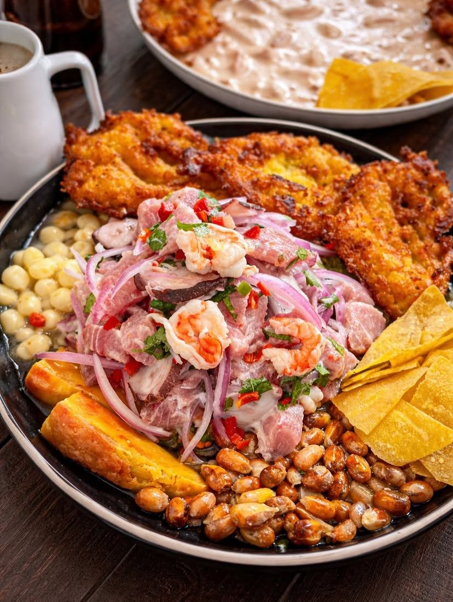

La Casa del Abuelo: tradición entre paredes antiguas en Lambayeque
En una vivienda tradicional de Lambayeque, “La Casa del Abuelo” se ha convertido en una cevichería reconocida por su sazón casera y su propuesta gastronómica basada en la autenticidad y la tradición local.
Buen Diente
Un emprendimiento con esencia tradicional
“La Casa del Abuelo” abrió sus puertas el 12 de octubre de 2024 como un emprendimiento familiar enfocado en rescatar la cocina casera dentro de un espacio sencillo y tradicional. Su propuesta se basa en mantener el sabor auténtico por encima de la apariencia del local.
El negocio se desarrolla dentro de una casa antigua, lo que refuerza su identidad como un espacio cercano y con un estilo completamente tradicional.
Una experiencia ligada a lo casero
El ambiente del local conserva una estética sencilla, sin decoraciones modernas, lo que genera una experiencia más íntima y familiar para los comensales.

Cevichería tradicional en Lambayeque: identidad casera y sabor auténtico.
Gastronomía marina con toque criollo
La propuesta gastronómica está centrada en platos marinos preparados con sazón criolla, priorizando el sabor y la frescura de los ingredientes por encima de la presentación.
Uno de los acompañamientos más representativos son las tortitas de choclo, reconocidas por su textura suave y su sabor dulce que complementa los platos principales.

Adaptación y crecimiento
Con el tiempo, el negocio ha incorporado el servicio de delivery, ampliando su alcance hacia Chiclayo y zonas cercanas, permitiendo que más personas disfruten de su propuesta gastronómica.
Identidad y aceptación del público
La aceptación del público ha sido progresiva, impulsada principalmente por recomendaciones. Su combinación de sabor casero y precios accesibles ha fortalecido su presencia local.
Tradición como valor principal
“La Casa del Abuelo” demuestra que la gastronomía no depende únicamente del espacio, sino de la autenticidad, el sabor y la tradición que se mantiene en cada preparación.

En Lambayeque, espacios como “La Casa del Abuelo” reflejan cómo la cocina tradicional sigue vigente, manteniendo viva la esencia de lo casero dentro de la gastronomía local.